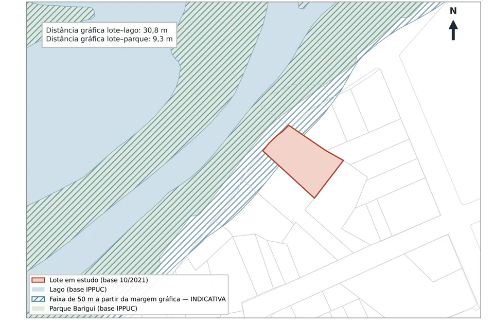

06 Projeto · Bigorrilho, Curitiba/PR
Análise Urbanística e Histórico-Cadastral no Bigorrilho
Auditoria da subdivisão de 1983 e da unificação dos lotes C5 e C6, com reconstrução cartográfica sobre a base cadastral do IPPUC
Bigorrilho, Curitiba/PR, Brasil
Modelo técnico demonstrativo, elaborado a partir de pesquisa acadêmica de 2023 e revisado em 2026; a capa do relatório traz o nome na grafia anterior, Gabriel Barbosa Lourenço. Endereço, indicação fiscal e inscrição imobiliária do imóvel foram omitidos para preservar a privacidade.
Visão geral
O estudo reconstrói a história de um lote residencial no Bigorrilho, junto ao Parque Barigui, a partir das plantas cadastrais de 1983 e 1985, da Consulta Informativa de 2023 e da base cadastral do IPPUC de 2021. O lote resulta da unificação, em 1985, de dois dos nove lotes de uma subdivisão aprovada em 1983; a planta histórica, posicionada sobre a base atual, confirma essa origem e mostra onde a configuração de hoje diverge do parcelamento original. Cada ato é lido à luz das normas vigentes na sua data, e cada afirmação é classificada como fato comprovado, inferência técnica, hipótese ou pendência.
Problema
Análises de imóveis costumam misturar aprovação municipal, informação cadastral, registro e ocupação física, e aplicar a legislação atual a atos antigos. No lote estudado, o relatório de 2023 trazia a identificação errada dos lotes de origem, e as restrições ambientais registradas pesam mais que o zoneamento para quem pretende construir, subdividir ou adquirir.
Objetivo
Responder, com base verificável, a cinco questões: qual é a origem parcelária do lote; quais atos alteraram sua geometria e quando; que normas incidiam em cada ato e quais incidem hoje; que restrições urbanísticas e ambientais constam da informação oficial; e quais conclusões dependem de documentos ainda não obtidos.
Métodos e tecnologias
- Levantamento documental: plantas cadastrais de 1983 (subdivisão) e 1985 (unificação), carimbos de aprovação, Consulta Informativa do Lote e Consulta de Confrontantes de 2023.
- Auditoria do quadro de 1983: soma das nove áreas, testadas e participação de C5+C6, conferidas em script e planilha.
- Reconstrução gráfica do perímetro de 1983, em escala derivada das cotas, com posicionamento rígido sobre a base de lotes do IPPUC (2021) por 6 pontos de controle (RMSE de 1,32 m).
- Comparação entre áreas documentais e gráficas, com sobreposição dos polígonos e distância de Hausdorff.
- Enquadramento normativo por época — Lei 6.766/1979, legislação municipal e Lei 15.511/2019 —, sem aplicar normas posteriores a atos antigos; leitura das restrições ambientais e da série da Planta Genérica de Valores (2002–2023).
- Matriz de evidências com 44 afirmações classificadas como fato comprovado, inferência técnica, hipótese ou pendência.
Fontes de dados
- Prefeitura Municipal de Curitiba — plantas cadastrais de 1983 (subdivisão de parte do Lote "C" do Croqui nº 2400) e 1985 (unificação dos lotes C5 e C6), cópias digitalizadas
- Prefeitura Municipal de Curitiba — Consulta Informativa do Lote e Consulta de Confrontantes (11/03/2023)
- IPPUC — bases cartográficas de lotes (10/2021), zoneamento, parques e bosques, lagos, divisa de bairros e arruamento; camada da Planta Genérica de Valores
- Legislação federal (Leis 6.766/1979 e 12.651/2012) e municipal (Leis 15.511/2019 e 15.784/2020; Leis Complementares 91/2014 e 136/2022, entre outras)
- Imagem de capa: Esri World Imagery (Source: Esri, Vantor, Earthstar Geographics, and the GIS User Community); contorno do lote: base de lotes do IPPUC (10/2021)
Os dados pertencem às respectivas fontes, com condições próprias de uso.
Resultados
24,26%
da subdivisão de 1983 (8.862,00 m² em nove lotes, sem área pública nem abertura de vias) corresponde ao lote C5+C6, unificado em 1985 com 2.150,21 m² e testada de 32,50 m.
2,32 m
é o afastamento máximo entre o lote reconstruído a partir da planta histórica e o lote da base cadastral de 2021; os polígonos se sobrepõem em 2.036,10 m², o que confirma a origem do lote.
−3,77%
é a diferença entre a área de projeto e a área gráfica de 2021 (2.069,06 m²). No conjunto dos cinco lotes atuais, a área gráfica supera a documental em 4,01%, e um deles é 23,7% maior que os lotes de origem.
9,3 m
separam o lote do Parque Barigui (30,8 m da margem gráfica do lago). A Consulta Informativa registra APP com faixa de 50 m, bosque nativo relevante e zona de amortecimento, restrições que pesam mais que o zoneamento ZR1.
Mapas e gráficos
Clique na imagem para aproximar; arraste ou role para navegar.
 Ampliar imagem
Ampliar imagem

Ampliar imagemConsulte os demais mapas, gráficos e resultados no relatório completo disponível ao final desta página.
Materiais completos
Código e dados
O estudo se baseia em documentos cadastrais de um imóvel particular. Para preservar a privacidade, a matriz de evidências, o GeoPackage com a geometria histórica e os scripts não são publicados; o relatório completo apresenta os cálculos e o método.